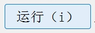

X-Anylabeling自动标注学习记录
X-Anylabeling自动标注学习记录
做项目经常接触数据标注和数据预标注，所以就想如果能将标注和预标注的功能集成，做一个可视化界面，那真是提升效率一大福音；当我还在做思想巨人的时候，已经有大佬实现了，着实佩服；好好好，又可以白嫖了。
目录
步骤
开源仓库：X-AnyLabeling
1、常规标注
这部分就不赘述了，打开文件，然后标注即可，和labelimg类似。
2、预训练模型标注
详细步骤：
- 点击左侧菜单栏第一个文件夹形状的图标，打开想要标注的图片文件夹；
- 点击左侧菜单栏的倒数第二个图标AI按钮；
- 在菜单栏下面会出现选择模型的选择栏，在该选择栏中选择所需功能的预训练模型，选择后会进行自动下载预训练权重，如果显示下载失败可以手动下载，下载地址在工程X-AnyLabeling-main\anylabeling\configs\auto_labeling下的.yaml配置文件中，选择对应模型的配置文件并双击打开，复制model_path后面的网址到浏览器即可下载，下载后将model_path改为存放下载权重的地址；
- 点击加载模型框边上的运行按钮，即可实现对当前图片的自动预标注；
- 若想对打开文件夹里的图片进行批量自动预标注，则在完成上述操作后点击左侧菜单栏最后一个播放图标。
3、自训练模型预标注
前提：自己训练的模型必须是XAnylabeling支持的模型，比如yolo11检测目前只支持s模型。（具体可查看配置文件）
详细步骤：
- 将自己训练的模型转为onnx格式；
- 在配置文件路径下，复制自训练的模型配置文件，双击打开，修改model_path为自训练转化的onnx存放地址，并修改相关类别。
- 后续操作和功能2相同。

需求侠上身
一点衍生，希望之后可以在大佬开源代码的基础上进行实现。
1、一键训练功能
可以将一站式训练平台的思路也添加到上述界面中，这样针对大模型、预训练模型第一次进行自动标注不准的时候，可以标注一部分数据就一键微调模型，通过不断优化模型可得到数据定制化模型和准确的标注信息。
2、标注格式转换功能
当前得到的标注信息是以json格式存储，可在上述界面中添加json格式转化为不同标注存储格式的按钮。
本博客所有文章除特别声明外，均采用 CC BY-NC-SA 4.0 许可协议。转载请注明来自 炒饭加蛋！